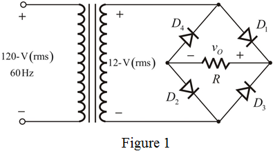

Step 1:
Draw the full wave bridge rectifier.

Step 2:
Consider the full-wave bridge rectifier circuit in Figure 1 operates through a 10-to-1 step-down transformer having a single secondary winding with a  load resistance.
load resistance.
Calculate the secondary winding voltage of the step-down transformer.
The following is the voltage ratio for the transformer.
Calculate the peak value of the secondary winding voltage.
Step 3:
Augment the rectifier circuit in Figure 1 with a capacitor across the load resistor to provide the peak-to-peak ripple voltage of required percentage of the peak output.
Write the expression that relates the ripple voltage with the peak voltage in ideal case.
Write the expression for the ripple voltage in practical case.
…… (1)
Step 4:
(a)
Consider the expression for the average output voltage in practical case.
…… (2)
(i)
Consider that the ripple voltage is 10% of the peak voltage.
Substitute the expression for  in equation (2).
in equation (2).
Substitute 16.97 V for  , 0.7 V for
, 0.7 V for  .
.
Thus, the average output voltage,  is .
is .
Step 5:
(ii)
Consider that the ripple voltage is 1% of the peak voltage.

Substitute the expression for  in equation (2).
in equation (2).
Substitute 16.97 V for  , 0.7 V for
, 0.7 V for  .
.
Thus, the average output voltage,  is .
is .
Step 6:
(b)
Write the expression for the fraction of the cycle the diode conducts.
…… (3)
Here, the conducting angle,  is,
is,
…… (4)
(i)
Consider that the ripple voltage is 10% of the peak voltage.
Substitute the expression for  in equation (4).
in equation (4).
Substitute 0.45 for in equation (3) to calculate the fraction of the cycle the diode conducts.
Thus, the fraction of the cycle the diode conducts is, .
Step 7:
(ii)
Consider that the ripple voltage is 1% of the peak voltage.
Substitute the expression for in equation (4).
Substitute 0.14 for in equation (3) to calculate the fraction of the cycle the diode conducts.
Thus, the fraction of cycle the diode conducts is .
Step 8:
(c)
The following is the expression for the average diode current.
The following is the expression for the average diode current in practical case.
…… (5)
(i)
Consider that the ripple voltage is 10% of the peak voltage.

Substitute 15.45 V for  , 0.7 V for
, 0.7 V for  ,
,  for
for  , and the expression for
, and the expression for  in equation (5).
in equation (5).
Thus, the average diode current, is, .
Step 9:
(ii)
Consider that the ripple voltage is 1% of the peak voltage. Therefore,
Substitute 16.18 V for  , 0.7 V for
, 0.7 V for  ,
,  for
for  , and the expression for
, and the expression for  in equation (5).
in equation (5).
Thus, the average diode current, is .
Step 10:
(d)
Write the expression for the peak diode current.
Write the expression for the peak diode current in practical case.
…… (6)
Step 11:
(i)
Consider that the ripple voltage is 10% of the peak voltage. Therefore,

Substitute 15.45 V for  , 0.7 V for
, 0.7 V for  ,
,  for
for  , and the expression for
, and the expression for  in equation (6).
in equation (6).
Thus, the peak diode current, is .
Step 12:
(ii)
Consider that the ripple voltage is 1% of the peak voltage. Therefore,

Substitute 16.18 V for  , 0.7 V for
, 0.7 V for  , for
, for  , and the expression for
, and the expression for  in equation (6).
in equation (6).
Thus, the peak diode current, is .